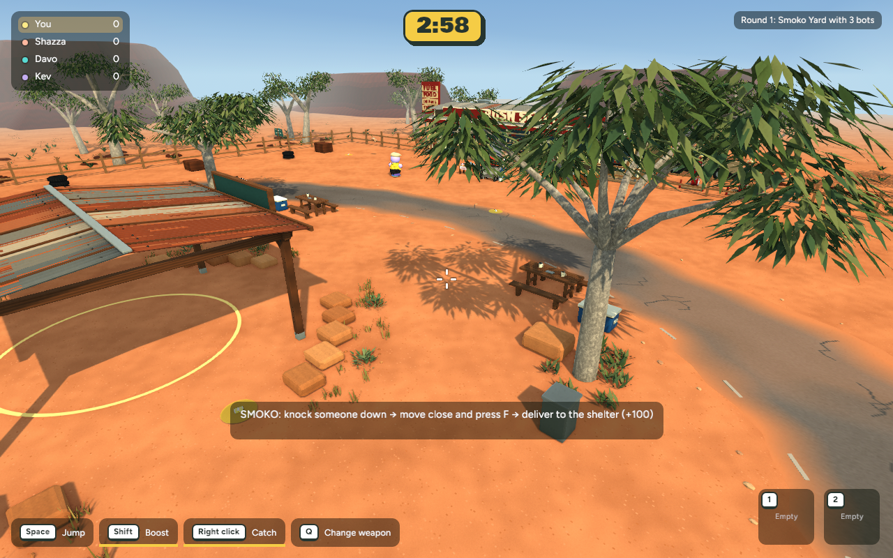
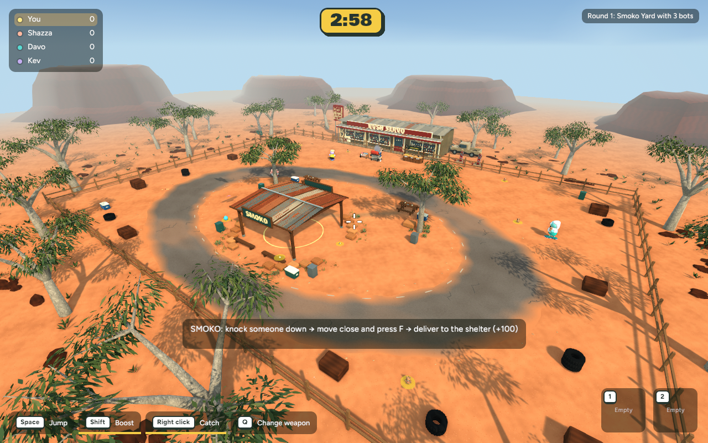
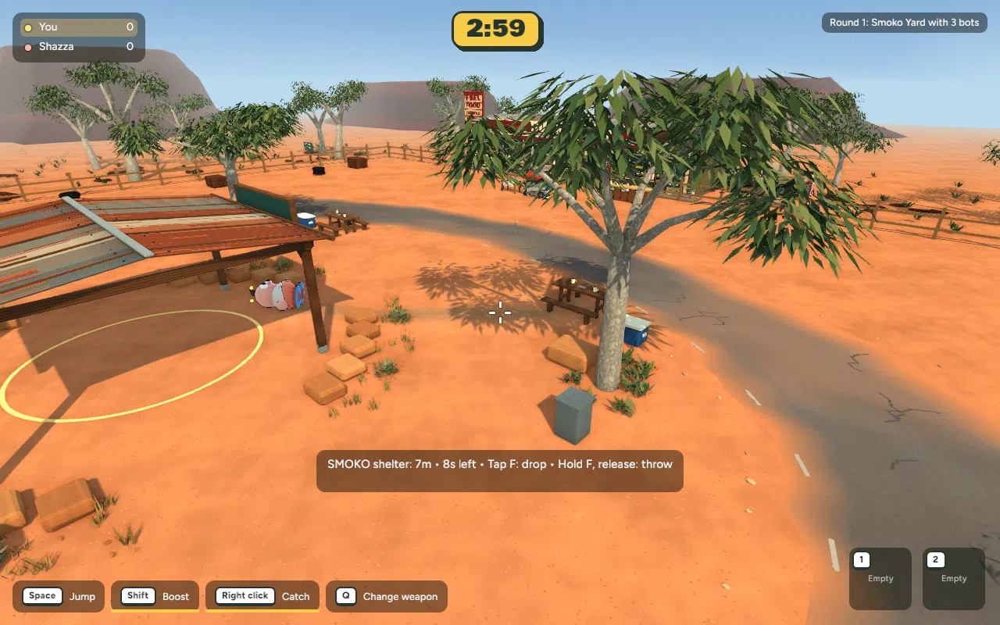

Actual native game captures — 30 October 2026. Ground-only first slice: worn soil, soft dusty fringe and quiet gravel-like colour variation. No new obstacles, props or outside scenery.
The change is intentionally restrained; look beneath the east picnic table and along its approach towards the shelter. Existing ground texture and flat surface are preserved.



245 app tests pass; native and browser builds pass. No new textures or material batches. Mean frame times close to baseline; close-view p95 increased by 0.965 ms in this sample. Browser/device performance not measured.
Local review only: not committed, pushed or published.
Full checks, tuning and recovery